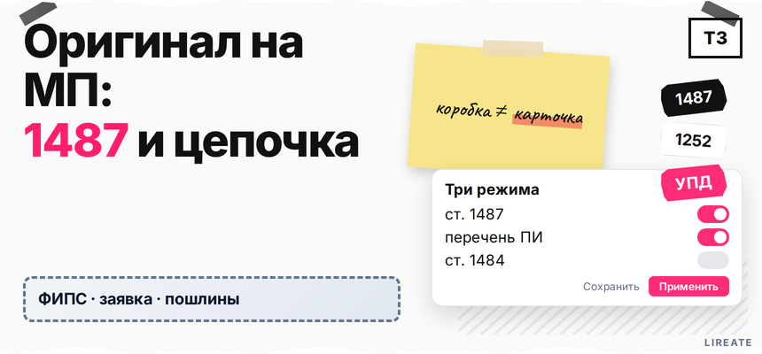
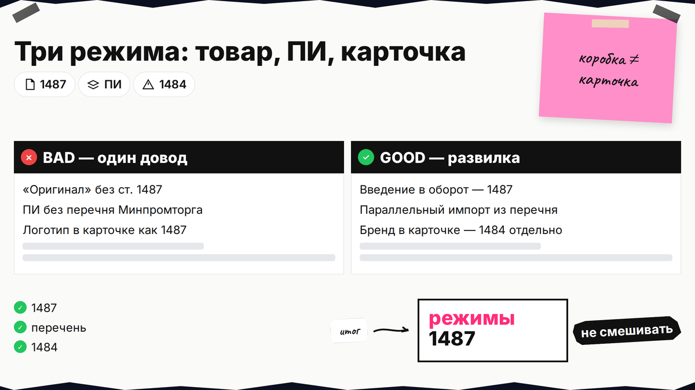
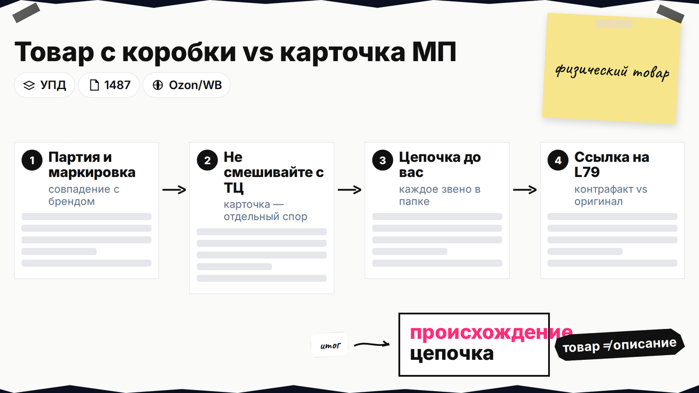
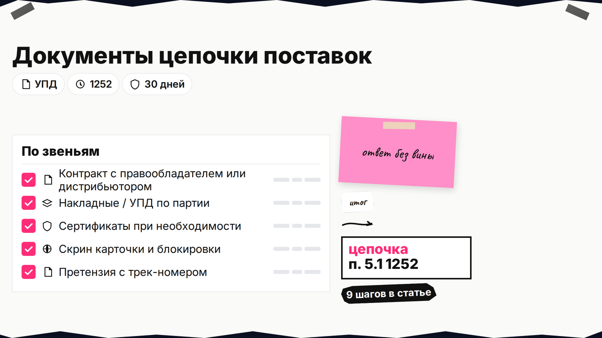

Вы продаёте фирменную коробку с логотипом, а правообладатель или Ozon требуют документы или называют товар контрафактом. Оригинал не означает автоматическую защиту: смотрят на партию, ввод в оборот и карточку в интернете. Вы разделите спор на три ветки по ст. 1487, перечню Минпромторга и ст. 1484, соберёте цепочку УПД и ответите без ложного признания вины. 26.11.2026; не индивидуальная юридическая консультация.

TL;DR / Быстрый инсайт: Исчерпание права на товарный знак (ст. 1487) защищает только законный ввод этого товара в оборот в РФ правообладателем или с его согласия. Параллельный импорт из перечня Минпромторга - другая ветка: ввод за рубежом, иные последствия по ст. 1515 и ст. 1252. Спор о названии, фото и "официальном" стиле карточки - по п. 2–3 ст. 1484, не про коробку. Календарь ответа - L02, узкий разбор письма - L79.
Гайд для селлера на маркетплейсах, который перепродаёт брендовый товар. Исчерпание - когда право на знак на конкретных экземплярах уже "отработало" после законного выпуска в продажу в РФ.

Прежде чем тянуть ст. 1487, выпишите, в чём спор: только физический знак на товаре, документы происхождения или ещё и контент карточки.
| Режим | Когда срабатывает | Главный риск |
|---|---|---|
| Национальное исчерпание (ст. 1487) | Товар введён в оборот в РФ правообладателем или с согласия | Нет цепочки до дистрибьютора; другая партия в претензии |
| Параллельный импорт (перечень Минпромторга) | Знак и товар в перечне; ввод в оборот за пределами РФ с согласия | Перечень не покрывает SKU; одной ДТ мало без цепочки |
| Карточка МП (ст. 1484) | Бренд в названии, инфографике, чужих фото, намёк "официальный магазин" | 1487 не снимает претензию к тексту и РИД на фото |
Схема выбора: жалоба на подлинность партии → 1487 или ПИ → пакет цепочки. Жалоба на название/фото → 1484 → правки карточки и свои исходники. Оба основания → два блока в ответе, не смешивайте.
Делайте: в письме правообладателю перечислите режимы отдельными абзацами. Не делайте: писать "товар оригинальный" без привязки к артикулам и УПД.

День 1. Сохраните скрин карточки с URL и датой, артикул, остаток, номер поставки. Отдельно сфотографируйте знак на упаковке и выпишите, как бренд показан в заголовке и инфографике.
Проверьте знак в Поисковой платформе Роспатента: правообладатель, классы МКТУ, срок. Если спорят о сходном слове в названии при том, что на коробке другой знак, готовьтесь к смешению по п. 6 ст. 1483, а не только к 1487.
Делайте: таблицу "партия - поставщик - знак на товаре - знак в карточке". Не делайте: менять карточку до сохранения скринов, если идёт спор.

Одного договора с оптовиком мало: суды и Яндекс Маркет просят связку на каждое звено - кто купил у кого (справка Маркета).
| Звено | Что приложить | Зачем |
|---|---|---|
| Вы → поставщик | Договор, УПД или ТОРГ-12, платёж | Связь SKU с накладной |
| Поставщик → дистрибьютор | Договор, УПД, подтверждение статуса дилера | Согласие правообладателя на канал |
| Импорт | ДТ, инвойс, контракт, выпуск | Ввод в оборот и таможенный след |
| ПИ за рубежом | Цепочка до ввода за пределами РФ, договор дистрибьютора с брендом | Режим перечня, не "голая" сертификация |
Одной таможенной декларации без цепочки до правообладателя часто мало при споре о параллельном импорте (обзор на ppt.ru). Судебные примеры с дилером и ЕАЭС иллюстративны, не заменяют ваш пакет документов.
Делайте: нумеровать приложения так же, как в ответе площадке. Не делайте: подставлять старые УПД от другой партии.
По ст. 1487 не нарушение - использование знака на товарах, введённых в оборот на территории РФ правообладателем или с его согласия. Закупка у российского дилера с документами обычно ближе к этой ветке, чем "серая" схема без дистрибьютора.
Параллельный импорт - отдельный режим: товар и знак в перечне Минпромторга (приказ № 2701), ввод в оборот за пределами РФ с согласия. К примечаниям к ст. 1252 и ст. 1515: для таких товаров часть гражданско-правовых последствий не применяется при соблюдении условий. Механизм перечня на момент подготовки материала действует до конца 2026 (в т.ч. продление законодательством); сверяйте текст НПА на дату партии.
Импорт без согласия правообладателя может оспариваться даже при "оригинальной" маркировке (КС РФ № 8-П от 13.02.2018). Не путайте ПИ с любым ввозом.
Делайте: сверить код ТН ВЭД и наименование знака с актуальным перечнем. Не делайте: заявлять 1487 для товара, ввезённого без согласия, если он не в режиме ПИ.
П. 2 ст. 1484 включает размещение знака в сети, в предложениях о продаже и рекламе. Карточка МП - это интернет-витрина. Даже при 1487 на товар правообладатель может спорить о чужих фото, баннерах "официальный дилер" и логотипе в заголовке.
Реклама и сравнения с брендом - отдельные правила: см. L09. В карточке безопаснее: нейтральное описание, свой визуал, без намёка, что вы - сам бренд.
Ozon до проверки документов вправе скрыть карточку; ст. 1487 не отменяет требования площадки к контенту. Делайте: договоры на фото/дизайн или свои исходники; спор о чужих снимках - защита фотографий. Не делайте: скачивать фото с сайта бренда без права.
Между юрлицами и ИП до иска о компенсации - претензия и 30 дней (п. 5.1 ст. 1252). Структуру письма и оговорку "без признания вины" возьмите из L79 и календаря L02.
Блоки ответа: (1) режим - 1487 / ПИ / 1484; (2) таблица "артикул - УПД - звено"; (3) исправления карточки, если спор о контенте; (4) готовность к диалогу без признания нарушения.
Судебный каркас - в L74. Пакет документов можно обсудить на услугах Lireate. Делайте: отправлять ответ с описью. Не делайте: признавать выплату, если оспариваете только происхождение.
Правообладатель может утверждать: партия не та, дилер не уполномочен, товар после ввода изменён (ремаркетинг, новая упаковка без согласия). Товары с незаконно размещённым знаком - контрафактные (п. 1 ст. 1515); ваша задача - показать законный ввод, а не только "не подделка".
Если вы сами правообладатель и конкурент перепродаёт ваши партии - смотрите материалы для владельца знака, не этот гайд. Штраф площадки не равен компенсации по 1515.
Делайте: хранить переписку с поставщиком о статусе дилера. Не делайте: обещать покупателям "официальный магазин бренда" без письменного статуса.
Материал проверен: эксперт Елена Ковалева (Главный эксперт по SEO/GEO).
Достоверность данных: нормы ГК РФ (ст. 1484, 1487, 1252, 1515), справки маркетплейсов и открытая практика сверены на 26.11.2026; ключевые формулировки согласованы с кластером A22 "продажа оригинального товара и исчерпание права".
Отдельная "лицензия на перепродажу" чаще не нужна, если законно сработало исчерпание по ст. 1487 или режим ПИ. Докажите ввод в оборот и совпадение партии с документами.
1487 - про товары, уже введённые в оборот в РФ. ПИ - про перечень Минпромторга и ввод за рубежом с согласия; иные ограничения по 1252 и 1515 в примечаниях к ним.
Обычно нет: запросят связь поставщика с дистрибьютором или правообладателем. Соберите полное звено, как в справке Яндекс Маркета.
Нужно для поиска, но без создания впечатления, что вы - правообладатель, и без чужих фото. Спор о контенте - по 1484, не только по 1487.
Как часть пакета - да. Как единственный документ при ПИ - часто нет; нужна раскрытая цепочка до согласия правообладателя за рубежом.
Уточните, спор о товаре или о карточке. Дозагрузите недостающее звено, исправьте контент, повторите запрос. Параллельно готовьте ответ правообладателю по L02.
Зависит от цепочки и согласия на ввод в союзе; суды смотрят факты (есть осторожные кейсы, в т.ч. ЕАЭС). Не подменяйте ими текст ст. 1487 без анализа партии.